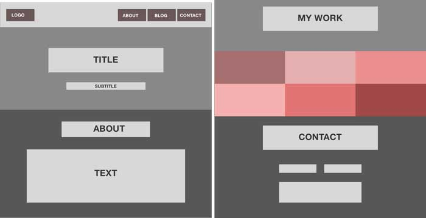
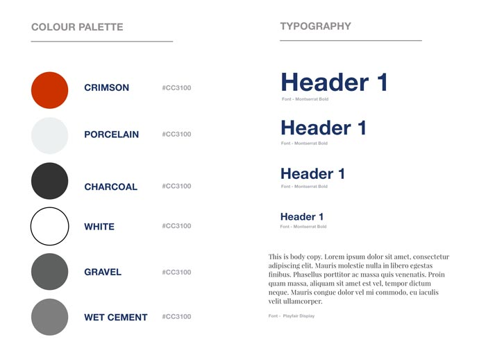
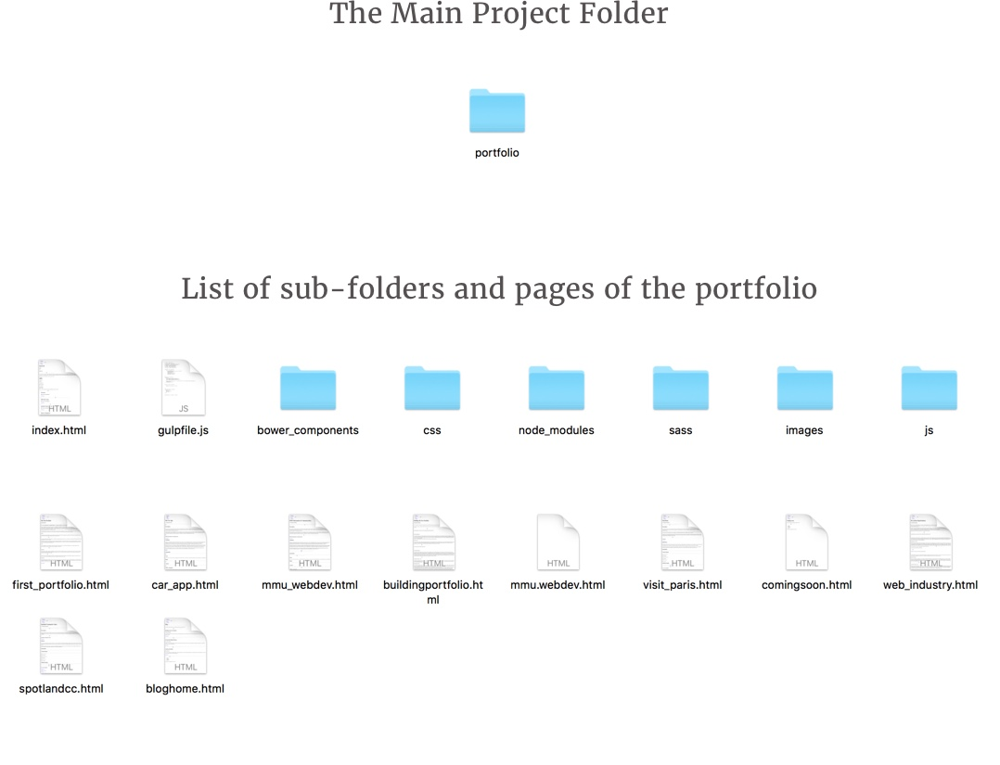

“Your resume and cover letter are not going to get you an interview, employers judge applications based on the quality of your portfolio”(Clark, 2016).
I knew I had to create a portfolio which truly represented my skills, my personality and my aspirations to become a web developer and it all started with research.
As with any web project you all start with research, and the same goes for this. I searched long and hard scrolling from web page to webpage on sites like Awwards and CSS Design Awards to look for inspiration, and generate ideas to come up with the architecture for my portfolio. Not only was the research about the design but also the content and how best to display it. Smashing Magazine had an excellent article highlighting the top things to include to make a killer portfolio.
I always wanted to create a full width single page website, and for this portfolio project it seemed like the best way to tackle it. The full width aspect allowed my content to be centered and and fit spaciously throughout my site, although I had considered creating a multi column website, I feel like It would’ve squashed my content and made it more difficult in the development stage to make my site responsive.
Once I had a clear idea about the research and layout of my portfolio it was into the Sketch App to make it come to life. Sketch is my go to tool for web designing, From the simple low fidelity mock-ups to creating high fidelity prototypes with interactivity, it really does have it all. I could talk about how good Sketch is for hours, but that’s for another post!
You can’t really get the essence of any design without the use of colour. Colour brings everything into life and really helps you visualise the product. I didn’t want my website to have a range of random colours, I looked at Flat UI Colors and Coolors the colour scheme generator for colour inspirations and came up with my own colour scheme for the site
I decided to go against the colourful and "bold approach and use a more defined"(Design Shack, 2016) and professional colour pallete which will enhance my content and not distract the user.
>One feature I added in my design was in the “my work” section. I wanted to come up with a unique way to display the work I had created but also explain in detail the reasoning and choices behind my decisions.
I came up with this idea because for a potential employer I didn’t want them to just see my finished work but understand the full process of how it was made.
Once I had the design finalised it was time to code. But I didn’t just go and create an index.html and start coding as usual, I knew this would be a big website with a lot of content and I wanted to test myself.
And I opened up my terminal. Yes, the dreaded terminal, a scary foe for some web developers but I knew I had to create an efficient web flow to help me code my website for “easier organisation and easier readability”(Pennell, 2016).
I launched Gulp in the terminal and created a file that was able to compile SASS to CSS, minify and concatenate my CSS and JavaScript and Auto prefix my code along with other tasks.
I decided to use SASS because I could structure my code neatly and I could use functions suh as variables and mixins that weren’t available in plain CSS. I started reading Sass for Web Designers, by A Book Apart to understand the basics of SASS and how to implement it correctly.
My folder structure was very important in maintaining my code clear and easy to read and edit. SASS helped me create code for specific areas of my website and then import them individually into a main.sass file, I used this structure because if I had a problem I could locate it through my code much easier without affecting any other section of my website.
The whole layout for my portfolio website was coded using flexbox. Flexbox was only introduced in 2014 but many big companies have already adopted this new approach to responsive design
Flexbox allowed me easily create different sections for my layout with minimum lines of code and make it a lot easier to make all of my design responsive.
Creating my portfolio website was a challenging and interesting task. I had the chance learn and implement new technologies and techniques for my own work, it helped me understand the web development process from start to finish and essentially gave me experience to confidently tackle larger and more detailed projects.